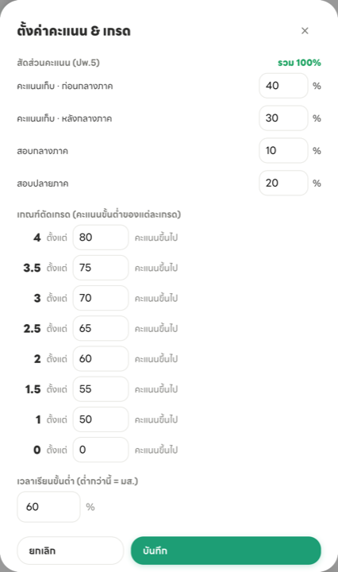
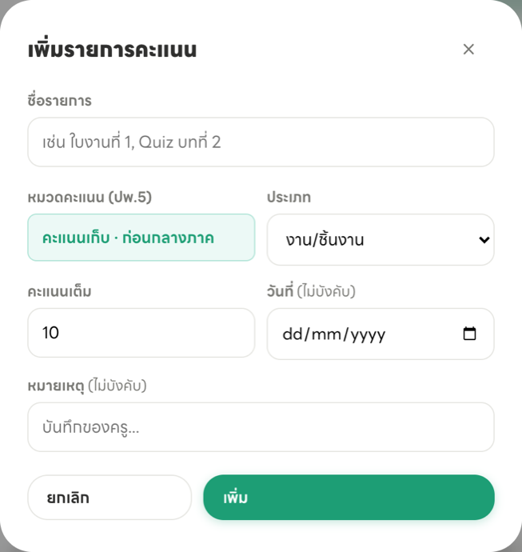
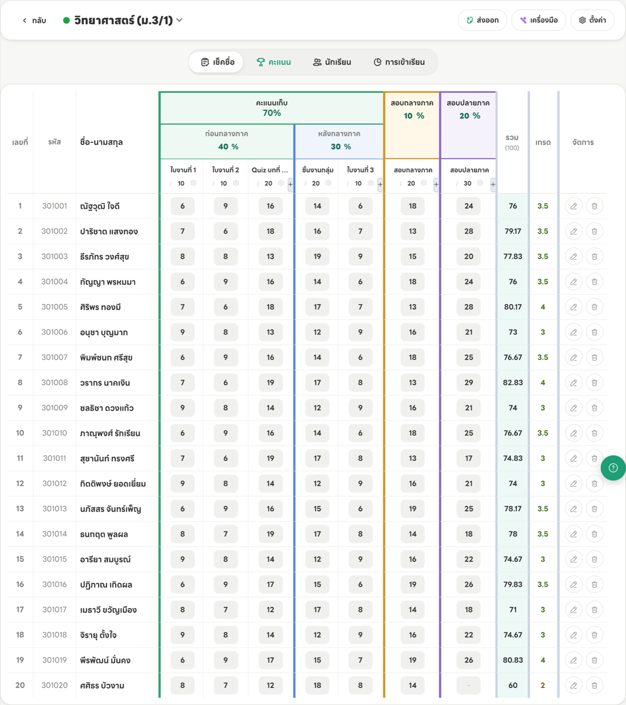
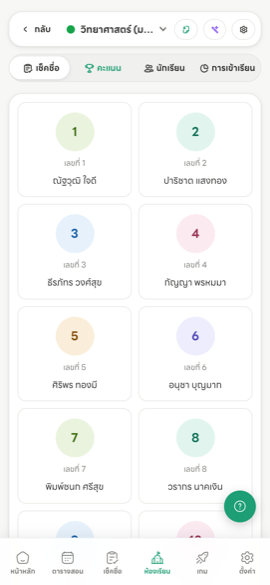
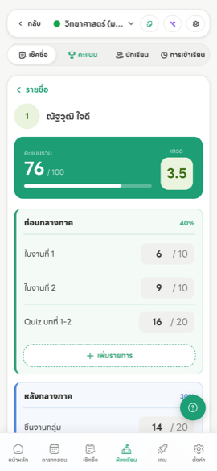
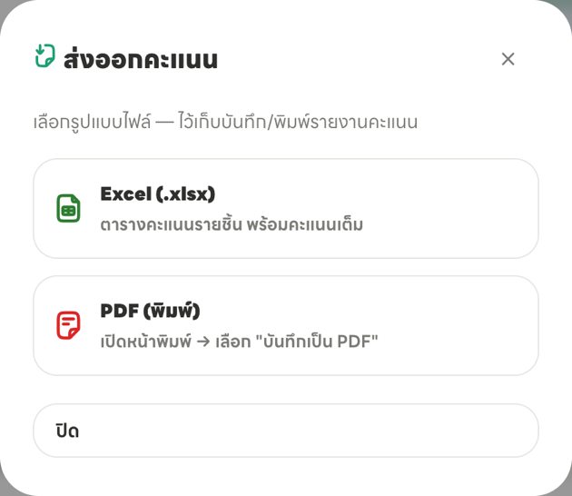
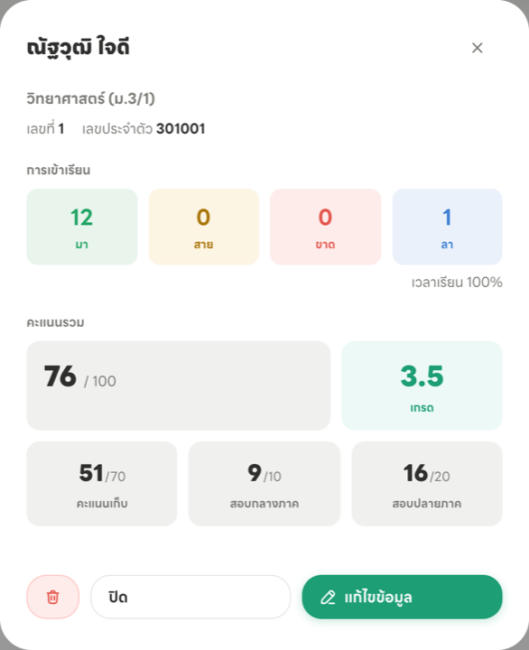

ตั้งค่าครั้งเดียวตอนต้นเทอม แล้วกรอกคะแนนไปเรื่อย ๆ ระบบคำนวณคะแนนรวมและเกรดให้เอง
ClassKru แบ่งคะแนนเป็น 4 ช่อง ตามที่โรงเรียนไทยใช้กัน แต่ละช่องมี สัดส่วน (%) ของตัวเอง รวมกันได้ 100
สิ่งที่ต้องเข้าใจคือ คะแนนเต็มของแต่ละงาน ไม่เกี่ยวกับสัดส่วน — ระบบจะเทียบบัญญัติไตรยางศ์ให้เอง
เข้าห้องเรียน → แท็บ “คะแนน” → กดปุ่ม “ตั้งค่า” มุมขวาบน

สัดส่วนคะแนน — กรอกให้ตรงกับที่โรงเรียนกำหนด ค่าเริ่มต้นคือ 40 : 30 : 10 : 20 (คะแนนเก็บรวม 70)
เกณฑ์ตัดเกรด — กรอกคะแนนขั้นต่ำของแต่ละเกรด ค่าเริ่มต้นเป็นเกณฑ์มาตรฐาน 80 / 75 / 70 / 65 / 60 / 55 / 50
เวลาเรียนขั้นต่ำ — บันทึกเกณฑ์ มส. ของวิชานี้ไว้ให้ครูอ้างอิง · ดูเวลาเรียนจริงรายคนได้ที่การ์ดสรุปนักเรียน (ขั้นที่ 6)
ในตารางคะแนน แต่ละช่องจะมีปุ่ม + อยู่ท้ายรายการสุดท้ายของช่องนั้น กดเพื่อเพิ่มงานใหม่เข้าช่องนั้นได้เลย

บนคอมพิวเตอร์ — ตารางเริ่มจากมุมมองสะอาดที่แสดงเฉพาะคะแนนหลัก ได้แก่ คะแนนเก็บ กลางภาค ปลายภาค คะแนนรวม และเกรด กด ขยายคะแนนย่อย เมื่อต้องการดูหรือกรอกใบงาน Quiz และชิ้นงานทั้งหมด กด ย่อคะแนนย่อย เพื่อกลับมาดูภาพรวม
เมื่อขยายแล้วและคลิกช่องคะแนน แถวนักเรียนคนนั้นจะเด่นขึ้น ส่วนแถวอื่นจะจางลง ช่วยป้องกันการกรอกผิดคน คอลัมน์ รวม และ เกรด ทางขวาจะอัปเดตทันที

สังเกตนักเรียนเลขที่ 20 ในภาพ ยังไม่ได้กรอกคะแนนสอบปลายภาค ช่องจึงเป็นขีด – และคะแนนรวมคิดเฉพาะส่วนที่กรอกแล้ว — กรอกไม่ครบก็ใช้งานได้ ไม่พัง ค่อยมาเติมทีหลังได้
บนมือถือ — จอแคบเกินกว่าจะแสดงตารางทั้งห้อง จึงเปลี่ยนเป็นการ์ดรายชื่อ แตะชื่อนักเรียนเพื่อเข้าไปกรอกทีละคน จากนั้นลากแถบจับด้านขวาขึ้นเพื่อเพิ่ม หรือลากลงเพื่อลด คะแนนจะแสดงระหว่างลากและบันทึกทันทีเมื่อปล่อยนิ้ว ไม่ต้องกดค้าง และหากต้องการพิมพ์ตัวเลขเองยังแตะช่องคะแนนตามปกติได้


ทุกช่องที่กรอก บันทึกอัตโนมัติ ไม่มีปุ่มเซฟ และระบบจะไม่ยอมให้กรอกเกินคะแนนเต็มหรือติดลบ
กดปุ่ม “ส่งออก” มุมขวาบนของหน้าคะแนน แล้วเลือกรูปแบบไฟล์

แตะชื่อนักเรียนในตาราง จะเปิดการ์ดสรุปของคนนั้น ซึ่งรวมทุกอย่างที่ต้องกรอกลง ปพ.5 ไว้ในหน้าเดียว

จุดที่มีประโยชน์ที่สุดคือแถวล่าง — ระบบรวมก่อน+หลังกลางภาคเป็น “คะแนนเก็บ” ให้แล้ว ได้เป็น 3 ช่องตรงกับฟอร์ม ปพ.5 พอดี คัดลอกลงแบบฟอร์มได้ทันทีโดยไม่ต้องบวกเอง
ด้านบนยังบอก เวลาเรียน (%) ที่คำนวณจากการเช็กชื่อให้ด้วย ใช้ตรวจว่าใครเข้าข่ายติด มส. ตามเกณฑ์ที่ตั้งไว้
สัดส่วนรวมไม่ครบ 100 ได้ไหม?
ได้ ระบบไม่บังคับ แต่คะแนนรวมจะไม่เต็ม 100 ทำให้เกรดเพี้ยน — ดูมุมขวาบนของหน้าตั้งค่าว่าขึ้น “รวม 100%” หรือยัง
อยากให้เกรดต่างจากที่ระบบคำนวณ ทำได้ไหม?
ตอนนี้ยังแก้เกรดรายคนโดยตรงไม่ได้ ถ้าเกรดออกมาไม่ตรงที่ต้องการให้ปรับ เกณฑ์ตัดเกรด ที่หน้าตั้งค่าแทน ซึ่งจะมีผลกับทั้งห้องพร้อมกัน
ยังไม่ได้เช็กชื่อ จะกรอกคะแนนได้ไหม?
ได้ คะแนนกับการเช็กชื่อแยกกันคนละส่วน ไม่ต้องทำอย่างใดอย่างหนึ่งให้เสร็จก่อน
เปลี่ยนคะแนนเต็มของงานที่กรอกไปแล้ว จะเป็นอย่างไร?
คะแนนที่กรอกไว้ยังอยู่ครบ ระบบจะคำนวณใหม่ตามคะแนนเต็มใหม่ทันที แต่ถ้าลดคะแนนเต็มลงจนต่ำกว่าที่นักเรียนบางคนได้ ระบบจะตัดให้เท่ากับคะแนนเต็มใหม่